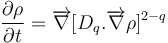
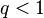
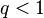
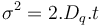
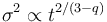
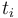
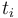

Anomalous Diffusion Filters
| Anomalous Diffusion Filters PlugIn (Fiji) | |
|---|---|
| Author | Antonio Carlos da S. Senra Filho ([1]) |
| Maintainer | Antonio Carlos da S. Senra Filho |
| Source | GitHub CSIM-ImageJ AnomalousDiffusionFilters repository |
| Initial release | February 03rd, 2015 |
| Latest version | February 03rd, 2015 |
| Development status | experimental, active |
| Category | Plugins, Filtering |
Contents
Anomalous Diffusion Filters

A PlugInFilter for the two different methods for image filtering: Anisotropic Anomalous Diffusion and Isotropic Anomalous Diffusion. Both methods description can be found in the Physics in Medicine and Biology article weblink and have a discrete solution of generalized diffusion heat equation (also know as a porous media equation).
In summary, the anomalous diffusion filters are generalized methods that are proposed using the new anomalous distribution probability function (PDF) paradigm, also called q-Gaussian PDF. These new filters are capable to build both classic and anomalous diffusion process, which is related to the anomalous parameter, called q value. When q=1 it returns the classic diffusion methods, both anisotropic diffusion (Perona and Malik method) and Gaussian filter (usual Gaussian filter widely knows in several filtering applications). On the contrary, when q ≠ 1 the anomalous diffusion filters uses the q-Gaussian probability distribution to attenuate the local noise present in each neighborhood around each pixel of the image.
Update notes:
- Feb-01-2015: The methods are capable to process image stacks, however, all the filtering method still is performed in bidimensional images.
Anomalous Diffusion Analytic Description
Anomalous diffusion processes (ADP) are mathematically denoted by a power law in the Fokker-Planck equation, leading to the generalized form. There are several generalizations of the Fokker-Plank equation, which should give many different partial differential equations (PDEs). Here we adopt only the so called porous media form, allowing the super-diffusive and the sub-diffusive processes. In porous media, channels are created promoting or blocking the flow of the density function. Equation (\ref{Eq:FokkerPlanckGeneralized}) shows the generalized heat flow equation that is the main PDE equation for the anomalous diffusion paradigm.

Where  represents diffusing element concentration,
represents diffusing element concentration,  denotes the generalized diffusion coefficient and $q$ is the power law parameter conveniently written. When
denotes the generalized diffusion coefficient and $q$ is the power law parameter conveniently written. When  , the porous media equation recovers the classical diffusion, for  it represents sub-diffusive process, and when
, the porous media equation recovers the classical diffusion, for  it represents sub-diffusive process, and when  it means super-diffusive phenomena are present. The is the diffusion coefficient function that regulates diffusibility. We can distinguish function in isotropic: when the diffusion coefficient is the same for all direction, i.e. is direction invariant; and anisotropic behavior: when diffusion is driven to specific directions. The definition of isotropy or anisotropy is directly related to
it means super-diffusive phenomena are present. The is the diffusion coefficient function that regulates diffusibility. We can distinguish function in isotropic: when the diffusion coefficient is the same for all direction, i.e. is direction invariant; and anisotropic behavior: when diffusion is driven to specific directions. The definition of isotropy or anisotropy is directly related to  function, which is the spatial function that regulates the filter blurring effect at each point.
function, which is the spatial function that regulates the filter blurring effect at each point.
Generalized diffusion coefficient function
The generalized diffusion coefficient value, , must be consistent with ADP so that it can be used in IAD and AAD filters. The analytical form for must be consistent with the ADP time evolution of variance, which follows , i.e. linear relationship for classical diffusion, and , i.e nonlinear relationship for ADP.
Filter's Description
Proposed IAD and AAD filters are based on iterative numerical algorithms for ADP. The method used to solve partial differential anomalous equations uses finite differences, of first and second order, when time and space becomes discrete, i.e. digital images. Both isotropic and anisotropic approaches were implemented through numerical differential operators using explicit numeric formulation, similar to classic anisotropic diffusion filter (purposed by Perona and Malik).
Numerical approaches were implemented using differential operators in one dimension, and then rotated in eight angle directions with respect to the central reference pixel. We can express this rotation in follow equation.
![I_{\phi,t+1} = I_{\phi,t} + \lambda.\overrightarrow{\nabla} \Big[ D_q. \overrightarrow{\nabla} I_{\phi,t}^{2 - q} \Big]](_images/math/3/9/b/39bb12e01286c7716973c5444713c540.png)
Where  and
and  are the evaluated images in  iterations, and
are the evaluated images in  iterations, and  is the original image. is the diffusion coefficient regulated by a power law with
is the original image. is the diffusion coefficient regulated by a power law with  , and
, and  are the possible orientations with respect to the central pixel. The equation above assumes the time step is a constant (
are the possible orientations with respect to the central pixel. The equation above assumes the time step is a constant ( ) and it depends on the numerical discretization. A careful time step determination plays an important role for numerical stability. The time step determination have a direct influence on the numeric discretization of the diffusion equation and here it follows the same assumptions made for the classical anisotropic diffusion algorithm. More details about the time step parameters and numerical stability can be found in references section of the CSIM main wiki site.
) and it depends on the numerical discretization. A careful time step determination plays an important role for numerical stability. The time step determination have a direct influence on the numeric discretization of the diffusion equation and here it follows the same assumptions made for the classical anisotropic diffusion algorithm. More details about the time step parameters and numerical stability can be found in references section of the CSIM main wiki site.
Filters parameters
Basically, the common parameters that are used for both anomalous filtering methods are the number of iterations and the anomalous parameter (q value). The number of iterations is directly related to the time parameter and it must be a positive and integer number, because of the forward and discrete filter implementation. The anomalous parameter, or q value, is the general parameters to define what anomalous probability distribution that will be used for all filtering process in the image.
Now, the only different parameters that have to be set for each filter method are: Condutance and Generalized diffusion coefficient. In summary, both parameters have an intrinsic relationship with the diffusion intensity.
In the case of isotropic filtering, the diffusion intensity is set as a fixed parameter for all filtering process, given by the Generalized diffusion coefficient value (). This approach is similar with the Gaussian blur and have the physical process, where all the image space have the same diffusion intensity applied. A further idea, the anisotropic filtering set a local diffusion intensity based on the neighborhood characteristic. The local gradient magnitude is the general parameter to set what will be the filter behavior in that specific region of the image, given by its pixel neighbors. This kind of solution for the local diffusion intensity (gradient magnitude) is similar with the Perona and Malik anisotropic filter and for this case the Condutance parameters plays the edge detection role. See the Classic Anisotropic Filter to get more information about the condutance parameter.
Indicated Usage
Some studies were already made with different MRI imaging techniques and the both isotropic and anisotropic filters shown a good performance with some specific imaging modalities. Diffusion tensor imaging (DTI) and structural MRI images such as T1 and T2 weighted images show a better filtering efficiency with the AAD filter. For the IAD method, we indicate the use of higher SNR images such as T1 weighted images, where you do not need to decrease so much noise presented in the original image. A short analysis with functional MRI and Diffusion Weighted Imaging with the IAD methods was made and publish in international conferences (fMRI, DWI) and should be appropriate use this kind of filtering method to enhance image quality in these cases.

{kind=link}